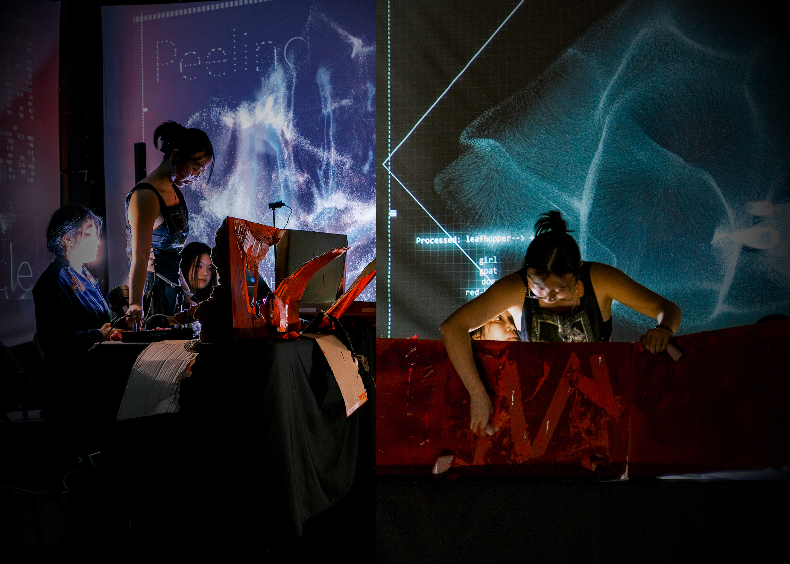

Paper
Peeling Cycle: Performative Visualization of Synthetic Datafication in Live AI Performance
Visualization research often begins from stable, pre-existing datasets. Yet contemporary AI systems do not merely display data; they actively produce it, transforming bodies, materials, and language into machine-readable signals and generated outputs. Peeling Cycle (2026) is a live audiovisual performance that makes this production visible. Rather than visualizing a fixed dataset, it visualizes the live transformation of bodily, material, semantic, and synthetic data through AI perception. The work integrates endoscopic imagery, breath classification through spectral analysis, DIY laser projection, live object detection, word-vector association, language-model interpretation, customized voice synthesis, and real-time image generation through TouchDesigner and Ableton Live, staging a continuous pipeline through which breath, cloth, laser traces, and gesture become synthetic voice, symbolic objects, and audiovisual rupture. We read this process through the lens of amplification. Amplification here is ambivalent: it renders hidden bodily and material signals perceptible, but in doing so it also intensifies exposure, classification, gendered semantic association, and misrecognition. This paper contributes: first, a conceptual framework that understands synthetic datafication as a performative visualization process; second, a live AI system that transforms bodily, material, semantic, and synthetic data into audiovisual form; and third, a critical analysis of how amplification produces gendered visibility through sensing, scanning, semantic steering, synthetic rendering, and rupture, grounded in two performed iterations of the work and the audience feedback they generated.
